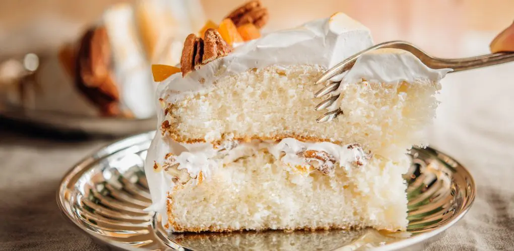

Delicious Dominican Cake

Description
Indulge in the ultimate Dominican cake that I've perfected through countless trials and errors.
This delicious cake always ends up soft and just perfect, thanks to my fail-proof recipe.
Each slice boasts a rich, moist texture and a delightful flavor that captures the essence of traditional Dominican baking.
Whether for a special occasion or a sweet treat, this Dominican cake never fails to impress.
From experimenting with different ingredients to fine-tuning the baking process, I've crafted a recipe that guarantees success every time.
The secret lies in the precise balance of flavors and the careful attention to detail, ensuring a cake that is both tender and flavorful.
You can adjust my recipe to your liking, but this recipe requires precision.
You have to follow it exactly and not alter the ingredients to achieve the perfect result.
This recipe requires a lot of patience, but I assure you it will be worth it.
Just make it and share this irresistible Dominican delight with family and friends, and enjoy the taste of perfection in every bite.
Ingredients
- 3 cups all-purpose flour
- 3 tbsp cornstarch
- 1 tbsp baking powder
- 10 eggs
- 2 cups sugar
- 4 salted butter sticks (Make sure your butter only contains milk and salt for better quality, or only milk if you prefer unsalted butter)
- Grated zest of one lemon/lime OR orange
- ½ cup orange juice (Store-bought)
- ½ cup pineapple juice (Store-bought)
- 1½ tbsp vanilla
- 1½ tbsp rum (Optional)
NOTE:
This recipe makes a one-pound cake. If you want to make less/more, adjust the amount of ingredients accordingly.
Follow These Steps To Have Your Ingredients Ready To Get Started
- Mix Dry Ingredients: We start by sifting the dry ingredients. We will need the 3 cups of flour. From these 3 cups of flour, we are going to remove
three tablespoons of flour and replace them with three tablespoons of cornstarch. This is the main trick to make our cake very fluffy and soft. We will also add one tablespoon
of baking powder, then sift and set aside.
- Separate Egg Yolks and Whites: The most complex part is separating the egg whites and yolks. You will need 10 eggs and 3 bowls: one for six egg whites,
one for 10 egg yolks, and one for the four remaining egg whites. You can save the four remaining egg whites for making Italian meringue
(which you can find on my list of recipes or by clicking the link at the bottom of this page) or any other recipe you want.
- Prepare Egg Whites: On a separate bowl, pour the bowl with the six egg whites. Beat the egg whites for approximately 5 minutes or to stiff peaks.
Directions
- Butter Preparation: Start by beating the butter at a medium-low speed (setting 6 on Kitchenaid mixer).
- Incorporate Sugar: Gradually add the sugar in a steady stream so that it blends with the butter. While mixing, feel free to scrape the sides of the bowl
to remove any excess from the walls and beat at a slightly higher speed (setting 7 on Kitchenaid mixer).
Repeat this a few times as the mixture sticks to the sides of the bowl. Continue beating for 10 minutes or until the mixture is very creamy
(For reference, beat the sugar and butter until the mix looks almost white).
- Add Lemon Zest: At this point, add the lemon zest.
- Add Egg Yolks: Once the butter mixture is ready, reduce the speed and slowly add the yolk of 10 eggs one at a time.
- Incorporate Juice: Add half a cup of orange juice and half a cup of pineapple juice.
The juice must be store-bought, either from a gallon or canned, because it helps preserve the batter for longer.
- Incorporate Flour: Lower the speed completely and gradually add the flour.
- Add Rum and Vanilla: Add one and a half tablespoons of vanilla and one and a half tablespoons of rum and stop mixing once everything is incorporated. The rum is completely optional but it helps
give the recipe a very distinctive flavor profile and harmonize the flavors.
Note: If you find Dominican vanilla at the store, I recommend using it as it has a sweeter, more delicate flavor.
It is also thinner than regular vanilla, which makes it better for this recipe.
- Fold in Egg Whites: Gradually add the egg whites, gently folding them into the batter from the bottom to the top using a folding motion.
It’s important to do it this way so the batter doesn't lose volume. I warn you, your arms might hurt; mine always do, but this is how it should be done.
- Grease Pans: Now, let's grease the baking pans. I usually use butter spray and add a layer of parchment paper to prevent the batter from sticking
to the pans, but you can use whatever works for you or simply just use parchment paper. You can also make a mixture of equal parts vegetable oil (melted butter, coconut oil or any oil of your choice)
and all-purpose flour. With that mixture you don't need to use parchment paper and it will help the cake not stick to the sides of the pan and come out very easily.
- Baking: Place an extra tray in the oven with some water and preheat to 325°F. The tray with water in the oven creates steam while the cakes are baking,
which helps achieve a well-hydrated and fluffy cake. When done preheating, place the pans in the oven and bake for 1 hour at 325°F.
- Rest: Once out of the oven, let the cakes rest for 10 minutes. After 10 minutes, while the cake is still warm, wrap it with plastic wrap to trap the steam and hydrate the cake even more.
You can also enjoy this cake warm; it can be eaten alone or with pineapple jam, guava, or dulce de leche.